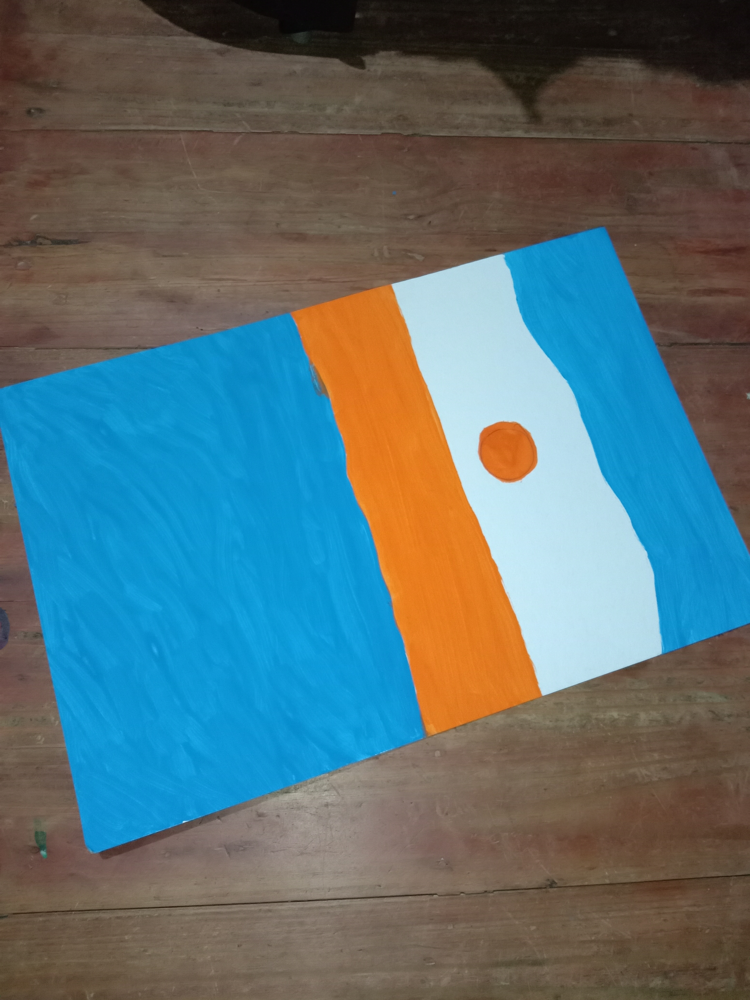
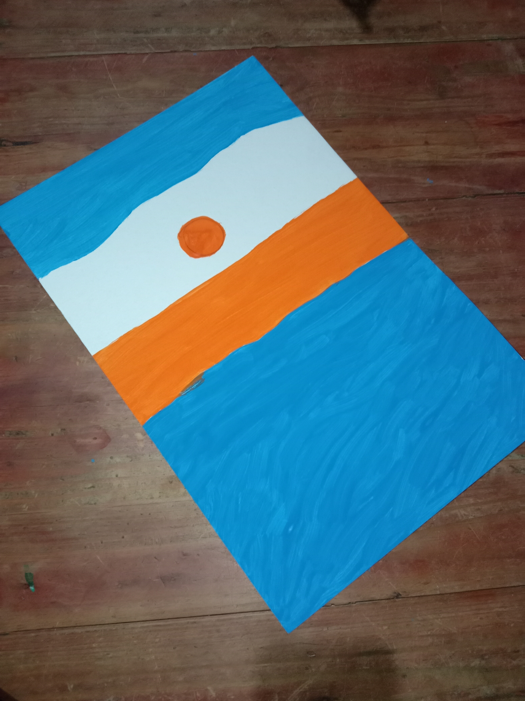
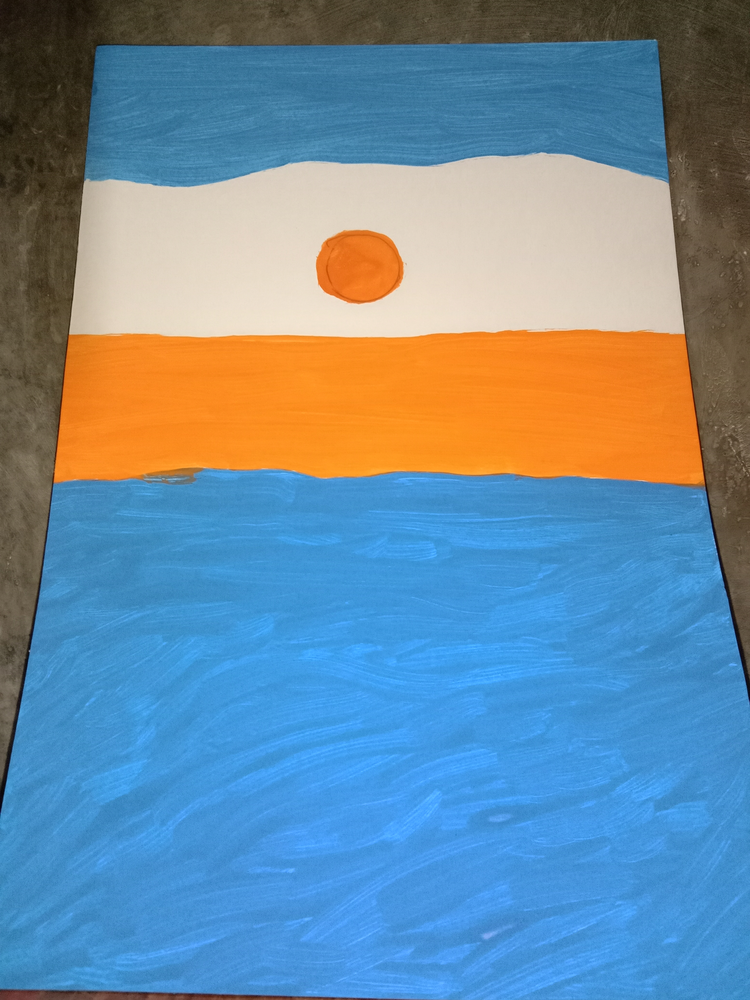
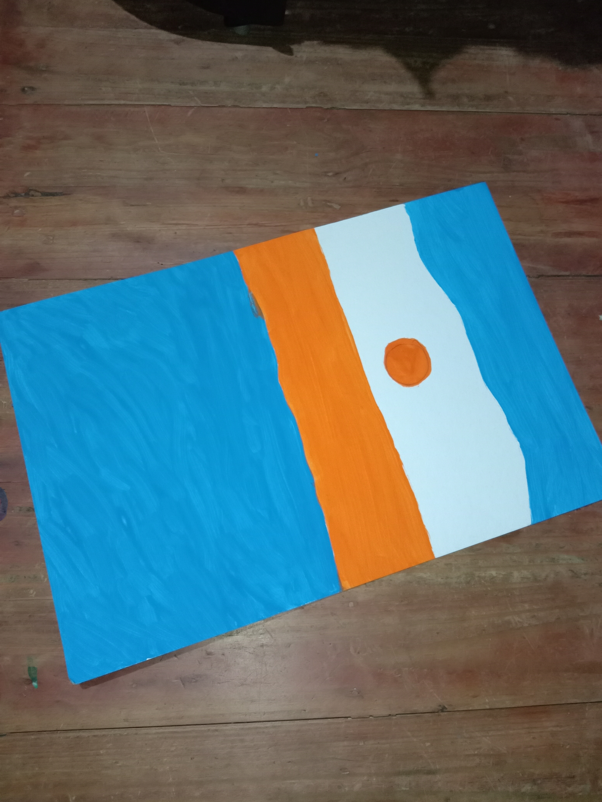
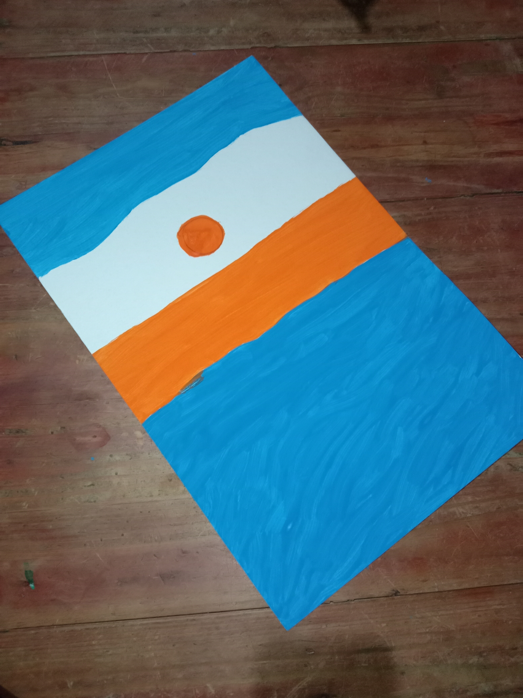
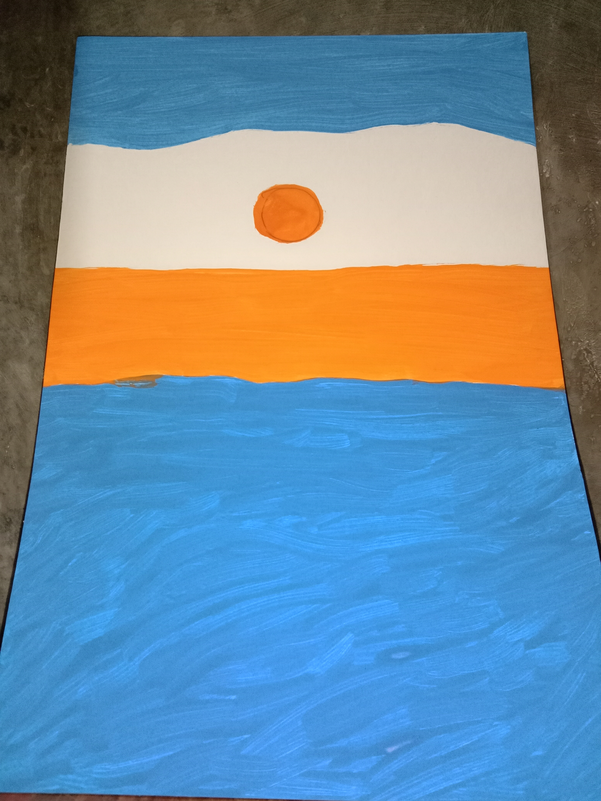

my painting is about nature that is visited by different people for example Boracay Palawan etc. Nature helps us when we have many problems because of the beauty of our nature, all the tired problems and hardships we are going through will disappear because the air is so fresh and it looks like you will come back.